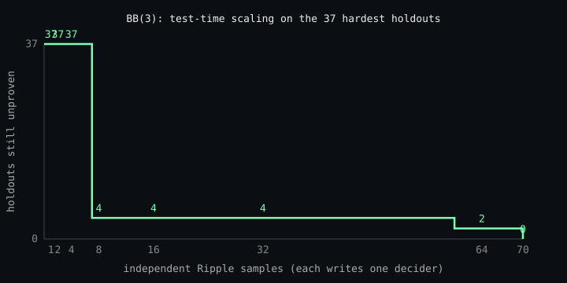
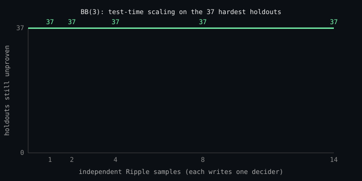

BB(3) = 21 ∎
Proven end to end by code Ripple-65B wrote. Every step checked by a 158-line kernel.
THE INFINITY FIELD
BB(4) / REPLAYAn agent proposes.
A kernel decides.
Enumerate every 3- and 4-state Turing machine; the ones that haven't halted after 300 steps are holdouts.
Ripple sees space-time diagrams and writes a decider program; it runs sandboxed (no network, read-only).
A trusted kernel checks every certificate (cycle or closed set over finite automata); a wrong one is rejected, a missing one leaves a dark tile.
No holdouts left means a theorem, re-checkable by anyone:
python3 -m neverhalt check <run>.
A finite proof of never.
3,551 in round 1 (one decider) → +55 closed-set proofs → the last 37 counters and bouncers fell to 70 parallel Ripple samples; sample 67 wrote a 295-line automata search that proves all 37 alone.
The contributing deciders import only the simulator, the kernel and the Python standard library — no reference code, no files.

$ python3 -m neverhalt check bb3-scale-hints
5415 machines enumerated from scratch · 1772 halt (longest: 21 steps, 1RB---_1LB0RC_1LC1LA) · 3643 holdouts
certificates accepted by the kernel: {'cycle': 526, 'tcycle': 3025, 'cps': 92}
BB(3) = 21 ∎Still hunting.
607,565 of 609,214 holdouts proven
- 588,654 from Ripple's first decider (48 s)
- +5,213 after the harness fed crash errors back and Ripple fixed its closed-set code
- +13,702 by running the BB(3) decider unchanged on BB(4) — code written for 3 states carried over to 4
- 1,649 left — Ripple is attacking them right now on a dedicated 2× B200 endpoint
More chances. Better constraints.
| REPLY FORMAT | OBSERVED RESULT |
|---|---|
| free-form replies | 0 of 9 samples wrote code (reasoning never stopped) |
| JSON-constrained replies | 14 of 14 wrote code |
| with the automata technique in the prompt | BB(3) closed after 70 samples ($0.062) |

Beyond the machine.
lean-eval (Lean FRO benchmark, official comparator): 3 sanity problems solved and accepted; real problems: free-form 0 of 22 samples produced Lean (runaway reasoning); with constrained output, the first batch had 6 of 8 produce Lean, 5 parse clean, the best down to 1 error. A live loop on 2× B200 continues; we track parse rate, unsolved-goal rate and solves per refinement round.
Honest notes
- technique hints for the final BB(3) samples are disclosed and stored with the run;
- Ripple via OpenRouter and a dedicated Together endpoint;
- the "reverse-engineer the weave" side experiment did not converge (best 33% pixel accuracy).